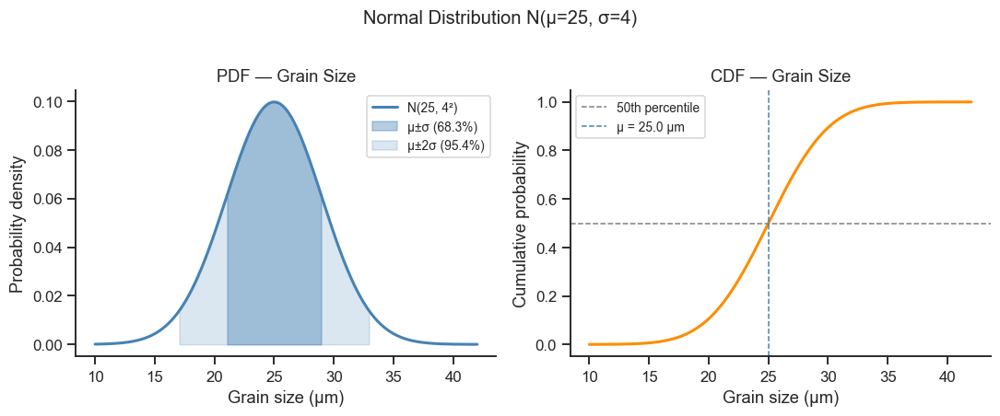
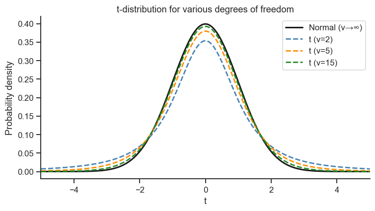
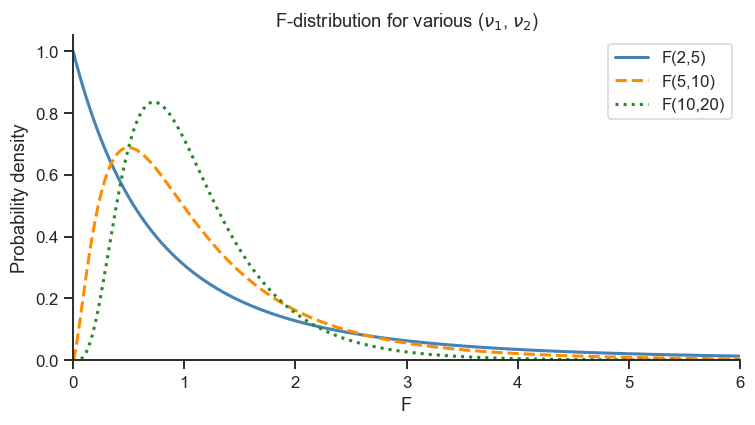
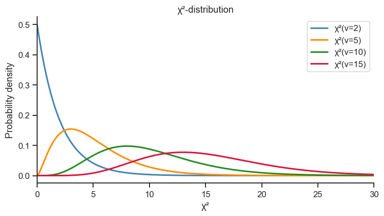
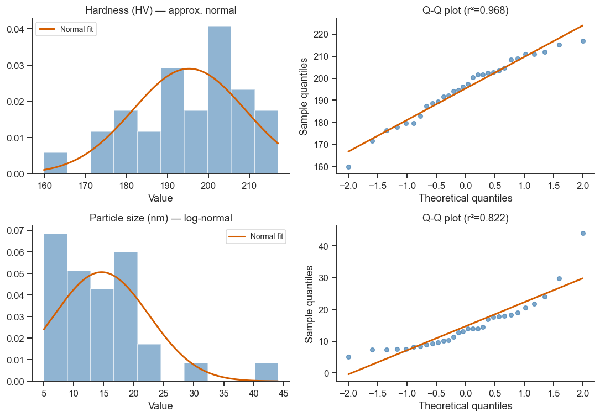

7. Probability Distributions#
Understanding the sampling distribution of your data is a prerequisite for choosing the right statistical test. This notebook covers the four distributions most commonly encountered in materials-science experiments.
Topics
Normal (Gaussian) distribution
Student’s t-distribution
F-distribution
Chi-squared (χ²) distribution
Testing for normality — Shapiro-Wilk and Q-Q plots
import numpy as np
import pandas as pd
import matplotlib.pyplot as plt
import seaborn as sns
from scipy import stats
sns.set_theme(style='ticks', palette='colorblind')
plt.rcParams.update({'figure.dpi': 110, 'font.size': 11})
rng = np.random.default_rng(42)
7.1 Normal (Gaussian) Distribution#
You will never need to type this formula by hand — scipy.stats.norm does
it for you — but it is worth knowing what the two knobs control: \(\mu\) slides
the whole bell left/right (where is “typical”?) and \(\sigma\) stretches or
squeezes it (how much natural scatter is there?). See Section 1 of the
theory page for why this particular shape shows up so often in
real measurements (the Central Limit Theorem).
Key properties:
Symmetric about the mean μ
68.3% of data within μ ± σ; 95.4% within μ ± 2σ; 99.7% within μ ± 3σ
Completely characterised by μ and σ²
# Grain size in annealed stainless steel — approximately normally distributed
mu_grain = 25.0 # µm
sig_grain = 4.0 # µm
dist_grain = stats.norm(loc=mu_grain, scale=sig_grain)
x = np.linspace(10, 42, 400)
pdf = dist_grain.pdf(x)
cdf = dist_grain.cdf(x)
fig, axes = plt.subplots(1, 2, figsize=(10, 4))
# PDF with filled 1σ and 2σ bands
ax = axes[0]
ax.plot(x, pdf, 'steelblue', lw=2, label='N(25, 4²)')
ax.fill_between(x, pdf, where=(np.abs(x - mu_grain) <= sig_grain),
alpha=0.4, color='steelblue', label='μ±σ (68.3%)')
ax.fill_between(x, pdf, where=(np.abs(x - mu_grain) <= 2*sig_grain),
alpha=0.2, color='steelblue', label='μ±2σ (95.4%)')
ax.set_xlabel('Grain size (µm)')
ax.set_ylabel('Probability density')
ax.set_title('PDF — Grain Size')
ax.legend(fontsize=9)
sns.despine(ax=ax)
# CDF
ax = axes[1]
ax.plot(x, cdf, 'darkorange', lw=2)
ax.axhline(0.5, ls='--', color='gray', lw=1, label='50th percentile')
ax.axvline(mu_grain, ls='--', color='steelblue', lw=1, label=f'μ = {mu_grain} µm')
ax.set_xlabel('Grain size (µm)')
ax.set_ylabel('Cumulative probability')
ax.set_title('CDF — Grain Size')
ax.legend(fontsize=9)
sns.despine(ax=ax)
plt.suptitle('Normal Distribution N(µ=25, σ=4)', y=1.02)
plt.tight_layout()
plt.show()
# Quantile examples
print(f'P(grain < 20 µm) = {dist_grain.cdf(20):.3f}')
print(f'P(grain > 30 µm) = {1 - dist_grain.cdf(30):.3f}')
print(f'95th percentile = {dist_grain.ppf(0.95):.2f} µm')

P(grain < 20 µm) = 0.106
P(grain > 30 µm) = 0.106
95th percentile = 31.58 µm
Take-home message
About 10.6% of parts fall below 20 µm and another 10.6% exceed 30 µm — roughly 1 in 10 parts on each side, purely from natural process scatter around a 25 µm target, with no process change involved at all.
The 95th percentile (31.6 µm) is the number a spec writer actually needs: “95% of parts will have grain size below 31.6 µm” is a directly actionable tolerance-setting statement, whereas the mean and σ alone are not.
All three numbers come from the same normal model — once μ and σ are known, every probability question about the process is just a different read-off of the same curve, which is the whole point of fitting a distribution rather than only reporting a mean.
7.2 Student’s t-Distribution#
When the population σ is unknown and must be estimated from the sample, the test statistic follows a t-distribution with \(\nu = n-1\) degrees of freedom. Notice in the plot below how the t-curves with small \(\nu\) (few samples) have visibly fatter tails than the black normal curve — that extra tail weight is the distribution’s way of admitting “I’m not fully confident in my estimate of the spread yet, so extreme values should be considered more plausible.” As \(n \to \infty\) (more data, better estimate of \(\sigma\)), the t-distribution approaches the standard normal.
x = np.linspace(-5, 5, 500)
fig, ax = plt.subplots(figsize=(7, 4))
ax.plot(x, stats.norm.pdf(x), 'k-', lw=2, label='Normal (ν→∞)')
for df_, color in [(2, 'steelblue'), (5, 'darkorange'), (15, 'forestgreen')]:
ax.plot(x, stats.t.pdf(x, df=df_), '--', color=color, lw=1.8, label=f't (ν={df_})')
ax.set_xlabel('t')
ax.set_ylabel('Probability density')
ax.set_title('t-distribution for various degrees of freedom')
ax.legend()
ax.set_xlim(-5, 5)
sns.despine(ax=ax)
plt.tight_layout()
plt.show()
# Critical values for two-tailed test at α=0.05
print('Two-tailed critical values t_{α/2, ν} for α=0.05:')
for nu in [3, 5, 10, 20, 30, 100]:
t_crit = stats.t.ppf(0.975, df=nu)
print(f' ν = {nu:>4d} → t_crit = {t_crit:.4f}')

Two-tailed critical values t_{α/2, ν} for α=0.05:
ν = 3 → t_crit = 3.1824
ν = 5 → t_crit = 2.5706
ν = 10 → t_crit = 2.2281
ν = 20 → t_crit = 2.0860
ν = 30 → t_crit = 2.0423
ν = 100 → t_crit = 1.9840
Take-home message
The critical value shrinks steadily as ν grows — 3.18 at ν=3 down to 1.98 at ν=100 — and is already close to the normal distribution’s 1.96 by ν=30. That’s the visual fat-tails effect from the plot above, quantified: small samples need a more extreme t-statistic to reach the same 5% significance threshold, simply because there is more uncertainty in the estimated spread.
Practically: a t-test on a tiny sample (ν=3, e.g. n=4) needs t > 3.18 to reject H₀, while the same t-statistic from a larger study (ν=30) would already be significant past t > 2.04 — more data doesn’t just narrow your confidence interval, it also lowers the bar a real effect needs to clear.
7.3 F-Distribution#
The F-distribution describes the ratio of two independent chi-squared variables — in practice, the ratio of two variance estimates. It answers “is one source of variability meaningfully bigger than another?” — used in ANOVA (between-group vs within-group variability, Section 3 of the theory page) and directly to test whether two groups have equal variances.
Unlike the symmetric normal and t-distributions, F is always positive and skewed — a variance ratio can’t be negative, and “twice as variable” and “half as variable” are not symmetric ideas the way “+1 unit” and “−1 unit” are.
x = np.linspace(0, 6, 500)
fig, ax = plt.subplots(figsize=(7, 4))
for (d1, d2), color, ls in [
((2, 5), 'steelblue', '-'),
((5, 10), 'darkorange', '--'),
((10, 20), 'forestgreen', ':'),
]:
pdf = stats.f.pdf(x, dfn=d1, dfd=d2)
ax.plot(x, pdf, color=color, ls=ls, lw=2, label=f'F({d1},{d2})')
ax.set_xlabel('F')
ax.set_ylabel('Probability density')
ax.set_title('F-distribution for various ($\\nu_1$, $\\nu_2$)')
ax.legend()
ax.set_xlim(0, 6)
ax.set_ylim(0)
sns.despine(ax=ax)
plt.tight_layout()
plt.show()
# Critical value for ANOVA with 4 groups, 32 total observations
# (matches Notebook 9's sintering-temperature case study exactly)
F_crit = stats.f.ppf(0.95, dfn=3, dfd=28)
print(f'F_crit(α=0.05, df1=3, df2=28) = {F_crit:.3f}')

F_crit(α=0.05, df1=3, df2=28) = 2.947
Take-home message
This F_crit=2.947 is the exact threshold Notebook 9’s one-way ANOVA (4 sintering-temperature groups, 32 observations) needs to clear: any computed F-statistic above 2.947 is significant at α=0.05, below it is not — the F-test used throughout ANOVA is nothing more than “is my F bigger than this cutoff from the F-distribution.”
7.4 Chi-Squared Distribution#
The χ² distribution with ν degrees of freedom is used for:
Testing goodness-of-fit
Confidence intervals for variance
Independence tests for categorical data
x = np.linspace(0, 30, 500)
fig, ax = plt.subplots(figsize=(7, 4))
for nu, color in [(2, 'steelblue'), (5, 'darkorange'), (10, 'forestgreen'), (15, 'crimson')]:
ax.plot(x, stats.chi2.pdf(x, df=nu), lw=2, color=color, label=f'χ²(ν={nu})')
ax.set_xlabel('χ²')
ax.set_ylabel('Probability density')
ax.set_title('χ²-distribution')
ax.legend()
ax.set_xlim(0, 30)
sns.despine(ax=ax)
plt.tight_layout()
plt.show()
# Confidence interval for variance (e.g., hardness measurements, n=20)
n, s2 = 20, 16.0 # n=20 samples, s²=16 HV²
nu = n - 1
chi2_lo = stats.chi2.ppf(0.025, df=nu)
chi2_hi = stats.chi2.ppf(0.975, df=nu)
ci_lo = nu * s2 / chi2_hi
ci_hi = nu * s2 / chi2_lo
print(f'95% CI for σ² (n={n}, s²={s2}): ({ci_lo:.2f}, {ci_hi:.2f}) HV²')
print(f' i.e., σ in ({np.sqrt(ci_lo):.2f}, {np.sqrt(ci_hi):.2f}) HV')

95% CI for σ² (n=20, s²=16.0): (9.25, 34.13) HV²
i.e., σ in (3.04, 5.84) HV
Take-home message
Note the CI is not symmetric around s²=16.0 (it runs from 9.25 to 34.13, not 16 ± something) — unlike the normal and t-distributions, χ² is skewed, so variance confidence intervals are lopsided even though mean confidence intervals usually aren’t.
In practical terms: with only n=20 samples, the true process variance could plausibly be anywhere from about 9 to 34 HV² (σ from 3.0 to 5.8 HV) — a reminder that estimating spread reliably typically needs more data than estimating a mean reliably.
7.5 Testing for Normality#
Many of the tests in Notebooks 8-10 (t-tests, ANOVA, regression) assume the underlying noise is approximately normally distributed. Before trusting those results, it’s worth checking that assumption rather than taking it on faith:
Visual: a histogram with a normal curve overlaid lets you eyeball whether the shape matches; a Q-Q plot is a more sensitive visual check — it plots your data’s quantiles against the quantiles a perfect normal distribution would have. If the data really is normal, the points fall on a straight diagonal line; systematic curves or S-shapes reveal skewness or heavy/light tails.
Formal tests: Shapiro-Wilk (
scipy.stats.shapiro) — best for small samples (\(n < 50\)); D’Agostino-Pearson (scipy.stats.normaltest) for larger samples. Both give a p-value (Section 2 of the theory page): a small p-value here means the data significantly departs from normality, so a large p-value is the “good” outcome — the opposite of how you’d read a p-value in most other tests, which trips people up the first time they see it.
# Sample 1: hardness (approximately normal)
hardness = rng.normal(195, 18, 30)
# Sample 2: particle size (log-normal — skewed)
particle_size = rng.lognormal(mean=2.5, sigma=0.6, size=30)
fig, axes = plt.subplots(2, 2, figsize=(10, 7))
for row, (data, name) in enumerate([
(hardness, 'Hardness (HV) — approx. normal'),
(particle_size, 'Particle size (nm) — log-normal'),
]):
# Histogram with normal overlay
ax = axes[row, 0]
ax.hist(data, bins=10, density=True, color='steelblue', alpha=0.6, edgecolor='white')
x_fit = np.linspace(data.min(), data.max(), 200)
ax.plot(x_fit, stats.norm.pdf(x_fit, data.mean(), data.std()), 'r-', lw=2, label='Normal fit')
ax.set_title(name)
ax.set_xlabel('Value')
ax.legend(fontsize=9)
sns.despine(ax=ax)
# Q-Q plot
ax = axes[row, 1]
(osm, osr), (slope, intercept, r) = stats.probplot(data, dist='norm')
ax.plot(osm, osr, 'o', color='steelblue', alpha=0.7, ms=5)
x_line = np.array([osm.min(), osm.max()])
ax.plot(x_line, slope * x_line + intercept, 'r-', lw=2)
ax.set_xlabel('Theoretical quantiles')
ax.set_ylabel('Sample quantiles')
ax.set_title(f'Q-Q plot (r²={r**2:.3f})')
sns.despine(ax=ax)
plt.tight_layout()
plt.show()
# Shapiro-Wilk test
for data, name in [(hardness, 'Hardness'), (particle_size, 'Particle size')]:
W, p = stats.shapiro(data)
conclusion = 'Normal (fail to reject H₀)' if p > 0.05 else 'NOT normal (reject H₀)'
print(f'{name}: W={W:.4f}, p={p:.4f} → {conclusion}')

Hardness: W=0.9651, p=0.4161 → Normal (fail to reject H₀)
Particle size: W=0.8369, p=0.0003 → NOT normal (reject H₀)
Take-home message
Hardness passes (p=0.42 > 0.05): the t-tests and ANOVA used throughout this course are safe to apply to it directly, exactly as its Q-Q plot’s points hug the diagonal.
Particle size fails decisively (p=0.0003 ≪ 0.05): its Q-Q plot curves away from the diagonal, matching the right-skewed shape visible in its histogram. Using a standard t-test on this variable without transforming it first (Exercise 1) or switching to a non-parametric test (Notebook 8 §8.5) would risk an unreliable p-value.
Exercises#
Log-transformation: Log-transform
particle_size(usenp.log(particle_size)) and repeat the Shapiro-Wilk test and Q-Q plot. Does the transformed data pass normality?Probability calculation: A ceramic sintering process yields parts with a density that follows \(N(\mu=3.85, \sigma=0.04)\) g/cm³.
What fraction of parts will have density < 3.78 g/cm³ (below specification)?
What density corresponds to the 99th percentile?
Central Limit Theorem demonstration: Draw 10000 samples of size \(n\) from a uniform distribution on [0, 1]. For \(n = 1, 5, 30\), plot the distribution of sample means and observe how it approaches normal as \(n\) increases.